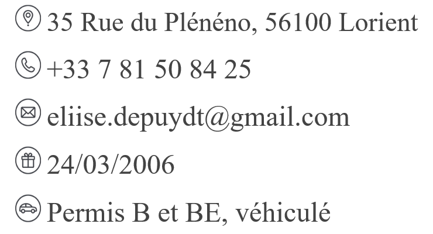
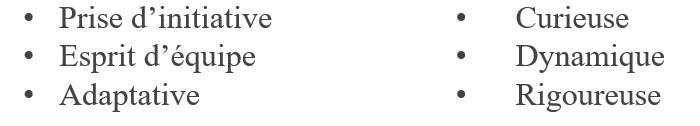
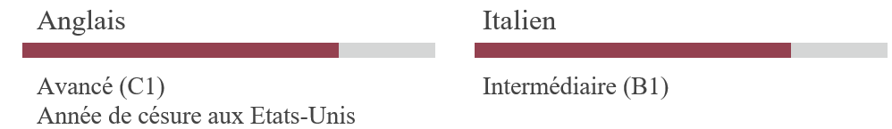

| Page d'accueil | Curriculum Vitae | Portfolio |
Elise DEPUYDT
Stage Génie Civil

Étudiante en école d'ingénieur à l'ENSIBS de Lorient, je
m'oriente vers le génie civil avec l'envie de découvrir le terrain
et les réalités des chantiers. Curieuse, dynamique et
rigoureuse, je souhaite développer mes compétences auprès
des professionnels du secteur et confirmer mon orientation vers
ce domaine.

Stage Génie Civil
TUC Rail - Bruxelles - Stage
Formation à la sécurité
Visite et découverte de différents chantiers
Observation des techniques et de l’organisation du travail
Animatrice
CLV Rhône Alpes - Roumanie - CDD
Séjour culturel
En charge de 5 jeunes de 11 et 15 ans en binôme
Gestion de la vie quotidienne et des activités
Conduite du minibus longue distance (France-Roumanie)
Animatrice
CIE Thalès - Domaine de Gaillac - CDD
Séjour itinérant équestre
En charge de 16 jeunes de 14 et 15 ans
Gestion de la vie quotidienne et des activités
Pratique équestre
Animatrice
CCGPF - Domaine de Gaillac - CDD
Séjour itinérant équestre
En charge d'une vingtaine d'adolescent de 14 à 17 ans
Gestion de la vie quotidienne et des activités
Pratique équestre
Stage BAFA
Poneys des 4 saisons - Gurgy - Stage
En charge de 24 enfants de 6 à 11 ans en binôme
Gestion des activités et de la vie quotidienne
PEI, ENSIBS – Lorient
Baccalauréat, Général, Mention Bien,
Spécialités Maths/Physique, Lycée Saint Joseph La Salle – Dijon
Grade : Junior, Crescent Public School – Crescent Oklahoma USA
• Pratique de l'équitation depuis 2009
• Natation
• Activités manuelles
• Architecture

Profil
Compétences
Expériences
Mai 2026
Août 2025
Juillet 2025
Juillet et août 2024
Août 2023
Formations
Septembre 2025 - En cours
Août 2025
Août 2022 - Mai 2023
Centres d'intérêts
Langues
Certificat et Formation